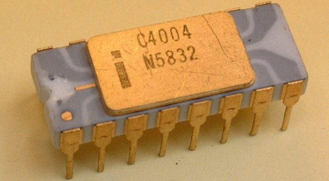

History of the CPU
The history of CPUs dates all the way back to 1903. In 1903, Nikola Tesla patented his electrical logic circuit, called a "gate", or a "switch." It used an on-off switch to perform logical operations, hence the name switch. This device was the beginning of the CPU .
In 1947, John Bardeen, Walter Brattain, and William Shockley created the first transistor. A transistor amplifies or switches electronic signals or power. Like Tesla's logic "switches," it can be used for binary 0 and 1 (on-off) switches. However, transistors can be grouped together to form more complex logic gates. Transistors form the basis of all modern computers, thus their inception is a major breakthrough for computing technology.

About a decade later, in 1958, Robert Noyce invented the integrated circuit. An integrated circuit is an important component of the computer. It is a small chip consisting of a series of resistors and transistors. Not long after Noyce invented the integrated circuit, IBM developed the first automatic mass-production facility for transistors in 1960, bringing the product into the market.
The year 1971 had marked a breakthrough in computing technology: Intel created the first ever microprocessor. This microprocessor, the Intel 4004, had 2300 transistors, 640 bytes of memory, could perform 60,000 operations per second (60 kHz), and had cost $200. To compare, even the cheapest processors today have clock speeds of several GHz and are ~ 10^5 times faster than the Intel 4004. Yet, they cost about $100, which is far less than the $200 of the 4004.